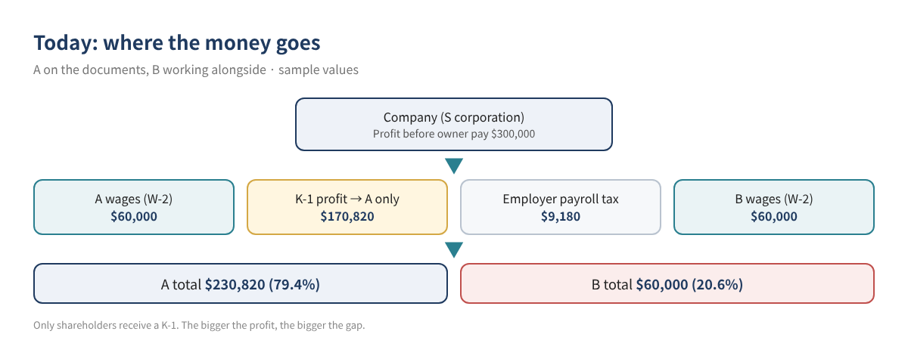
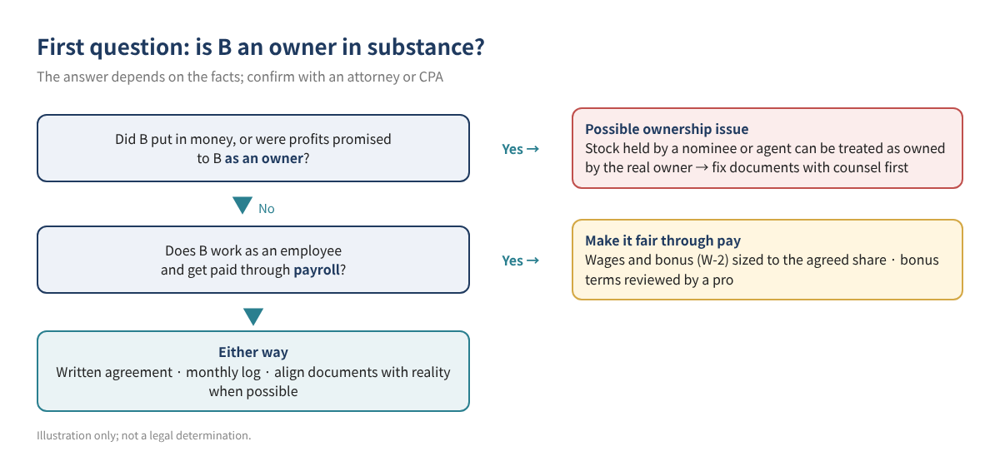
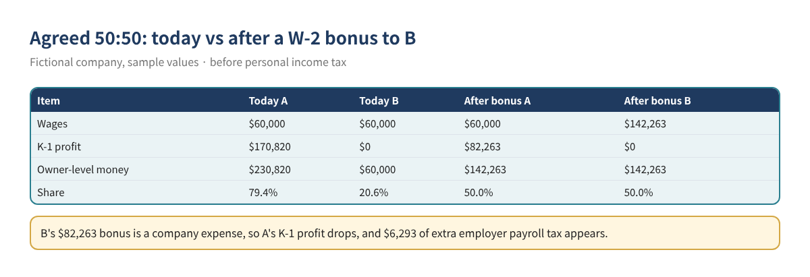

Two people start a business together, but for one reason or another only one of them is listed as the owner on the LLC (taxed as an S corporation) documents. Both draw a paycheck. At year end, though, the Schedule K-1 carrying the company's profit goes only to the shareholder of record. Then nobody can say for sure whether the "50/50" they agreed on actually happened.
This post puts numbers on that situation: how the money splits today, how far that is from the agreed split, and, when the documents can't change yet, how much extra W-2 pay would close the gap. The Excel calculator is in the free kit download.
Who this is for: S corporation owners (including LLCs taxed as S corporations) where one person is on the ownership documents but two people run the business and agreed to share profit; both draw wages but only one receives a K-1; and anyone who wants a written, numeric definition of "fair."
Read this first: this is not a way to quietly route profit to someone who isn't on the documents. A non-shareholder is normally paid as an employee, and if someone is really an owner but missing from the paperwork, that is itself a problem to fix. Please read section 2 before using the numbers.
The IRS Form 1120-S instructions allocate S corporation items to shareholders on a daily basis according to the shares each holds, and require a Schedule K-1 for each person who was a shareholder during the year (Instructions for Form 1120-S (2025)). With one shareholder of record, A, all K-1 profit goes to A. B receives wages only.
The more the company earns, the wider the gap. At the same time, K-1 income lands on A's personal return, so the tax bill concentrates on A too. "A takes more" and "A pays more tax" happen together, which makes it hard to judge by feel who is ahead.

Tax rules look past names on paper. Treasury Regulation 1.1361-1(e)(1) treats the person for whom stock is held by a nominee or agent as the shareholder (26 CFR 1.1361-1). If B contributed money or was promised profit as an owner, B could be treated as a shareholder, which affects K-1 allocation and S corporation eligibility. In that case, sorting out the documents with an attorney and CPA comes first.
An S corporation must also have only one class of stock: all shares must carry identical rights to distribution and liquidation proceeds, judged by the charter, bylaws, state law and binding agreements relating to distributions (the "governing provisions"). The regulation says commercial agreements such as employment agreements are not governing provisions unless a principal purpose is to circumvent that rule (26 CFR 1.1361-1(l)). So a promise to "distribute half the profit to B" can be risky, and a bonus agreement meant to stand in for ownership should be reviewed by a professional.

| A (shareholder of record) | B (not on documents) | |
|---|---|---|
| Tax position | Shareholder and employee | Employee (ownership in substance reviewed separately) |
| Receives | W-2 wages + K-1 profit, distributions | W-2 wages only |
| Pay standard | Reasonable compensation before distributions (IRS) | Agreed compensation (wages and bonus) |
| Taxes | Wages: payroll + income tax; K-1: income tax | Wages: payroll + income tax |
| Forms | K-1, W-2 | W-2 |
Table 1. Where each person stands. General pattern; actual treatment depends on the facts.
The calculator defines the pie as company profit before both people's wages and the employer payroll tax on them, minus that employer tax. A's share is A's wages plus K-1 profit; B's share is B's wages. It compares the actual split with the agreed one (say 50:50).
| Rate used (2026) | Employer | Employee | Source |
|---|---|---|---|
| Social Security | 6.2% | 6.2% | IRS Topic 751 |
| Medicare | 1.45% | 1.45% | IRS Topic 751 |
| Social Security wage base | Up to $184,500 | Same | IRS Topic 751, Pub 15 (2026) |
| Additional Medicare Tax | None | 0.9% of wages over $200,000 | IRS Topic 751 (not modeled) |
Table 2. Federal payroll tax rates used. State payroll and income taxes are not included.
A fictional company earns $300,000 before owner pay. A and B each draw $60,000 in wages, and they agreed to split 50:50 (all sample values).
| Item | A | B | Total |
|---|---|---|---|
| Wages (W-2) | $60,000 | $60,000 | $120,000 |
| Employer payroll tax (7.65%) | $4,590 | $4,590 | $9,180 |
| K-1 profit | $170,820 | $0 | $170,820 |
| Owner-level money | $230,820 | $60,000 | $290,820 |
| Actual share | 79.4% | 20.6% | 100% |
| Agreed amount (50%) | $145,410 | $145,410 | $290,820 |
| Gap | +$85,410 | −$85,410 |
Table 3. Today. Sample values.
B is $85,410 short. A bonus of $85,410 would overshoot, though: the bonus is a company expense that reduces A's K-1 profit, and it adds employer payroll tax, shrinking the pie. The calculator solves for the bonus as (agreed % × total − B today) ÷ (1 + agreed % × employer tax rate). Here: $85,410 ÷ 1.03825 ≈ $82,263.

| Item | After bonus: A | After bonus: B |
|---|---|---|
| Wages | $60,000 | $142,263 |
| K-1 profit | $82,263 | $0 |
| Owner-level money | $142,263 | $142,263 |
| Share | 50.0% | 50.0% |
| Added employer payroll tax | $6,293 (company cost, effectively shared by the split) |
Table 4. After the bonus. Sample values.
After tax the picture shifts a little, because wages carry employee Social Security and Medicare while K-1 profit does not. With both people at a 24% effective rate (a sample estimate), the after-tax split after the bonus is about 51.6% : 48.4%. Write down whether you are equalizing before or after tax.
Limits of the bonus approach: when B's wages end up far above A's, A receives most of the money as distributions. The IRS says a shareholder-employee must be paid reasonable compensation before non-wage distributions, so review A's wages too. Document objective bonus criteria (results, role) so the bonus doesn't read as a substitute for ownership, and check it with a professional.
| Sheet | What it does | You edit |
|---|---|---|
| Start | How to use, cautions, rate sources | Nothing |
| Calculator | Today's split, bonus to close the gap, after-tax view, warnings | Yellow cells (profit, wages, agreed %, tax estimates) |
| Monthly_Log | Monthly wages, bonus, distributions to A; remaining amount to B | Yellow cells (monthly) |
| Checklist | Annual review items | ☐ boxes |
Table 5. Calculator sheets. Sample values are pre-filled; overwrite them.
Get the calculator in the free kit download (English, plus an English/Korean version).
No. K-1 items are allocated to shareholders by the shares they hold. If B is really an owner, that is a documents issue for an attorney and CPA.
Binding agreements about distributions can count among the documents used to test the one-class-of-stock rule, and can raise ownership questions. Have any such agreement reviewed before signing.
There is no single answer; other income and state of residence change each person's rate. The calculator shows both so you can pick one and write it down.
A personal transfer can be a gift, a loan or payment for an interest, each with different tax results, and it leaves no payroll record. Running it through company payroll keeps it traceable and reported. Talk to a professional before trying anything else.
Pay B's bonus through payroll and record it as payroll expense. For outside payroll services see recording outside payroll; to hit a net bonus amount see bonus gross-up.
This article and calculator are general educational information, not tax, legal or financial advice, and no outcome is guaranteed. Ownership, S corporation eligibility, compensation levels and bonus agreements depend on the facts and state law; confirm with an attorney and CPA. Rates and wage bases change every year; check current IRS guidance. The company and amounts are fictional.